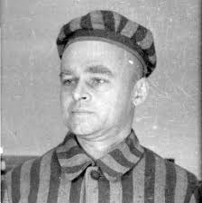

Individual escape attempts
At least 802 prisoners attempted to escape from the Auschwitz camps, mostly Polish or Soviet prisoners fleeing from work sites outside the camp. 144 were successful.
The fates of 331 of the escapees are unknown. A common punishment for escape attempts was death by starvation; the families of successful escapees were sometimes
arrested and interned in Auschwitz and prominently displayed to deter others. If someone did manage to escape, the SS picked ten people at random from the prisoner's block
and starved them to death.
A daring escape from Auschwitz was staged on 20 June 1942 by four Polish prisoners: Eugeniusz Bendera (an auto mechanic at the camp), Kazimierz Piechowski, Stanisław
Gustaw Jaster, and Józef Lempart. After breaking into a warehouse, the four dressed as members of the SS-Totenkopfverbände (the SS units responsible for concentration
camps), armed themselves, and stole an SS staff car, which they then drove unchallenged through the main gate.
On 24 June 1944, a Belgian-Polish Jew, Mala Zimetbaum, escaped with her Polish boyfriend, Edek Galiński, dressed in a stolen prisoner-guard uniform. They were later
recaptured, tortured, and executed by the SS. On 21 July 1944, inmate Jerzy Bielecki, dressed in an SS uniform and using a faked pass, managed to cross the camp's
gate together with his Jewish girlfriend, Cyla. Both survived the war.